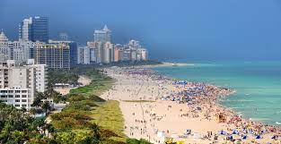
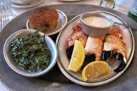
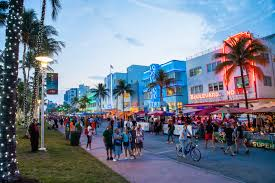
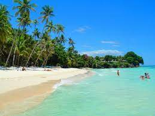
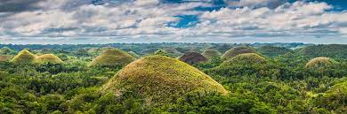
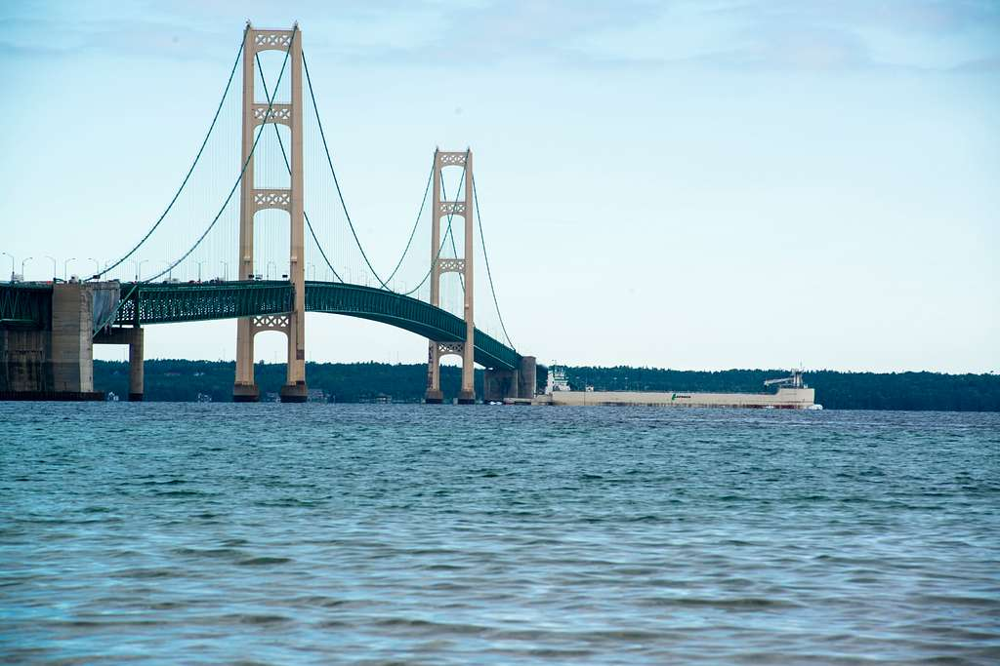

Miami, Florida
One of my favorite places to visit is Miami, Florida. Miami has wonderful beaches and a nice, warm climate that is perfect for sunbathing and swimmming.
There are also many great restaurants and bars in Miami. My favorite restaurant is called Joe's Stone Crab. They have the best crab legs I have ever had!
There are also many great places to shop in Miami. My favorite place to shop is the Lincoln Road Mall. They have many great stores and restaurants.
Photo Gallery
 Bohol, Philippines
Another one of my favorite places to visit is Bohol, a small island in the Philippines. My mom is from this island, which makes it very special to me.
Bohol boasts many beaches, and has a warm, tropical climate. I love to swim here because the water is so clear, but beware of the squishy jellies that are all over the ocean floor! If you are lucky, you may also spot some dolphins swimming!
Bohol is also home to the Chocolate Hills, which are a group of hills that are shaped like Hershey's Kisses. They are called the Chocolate Hills because they turn brown during the dry season.
In addition, Bohol is also home to the smallest monkey in the world, the Tarsier. You can visit them at the Tarsier Coversation area. They are the size of the palm of your hand! They are so cute.
Photo Gallery

Mackinaw Island, Michigan
Last year, I visited Mackinaw Island for the first time, and completely fell in love with it!
We had to ride a ferry in order to go to the Island. One fun fact about the island is that there are no cars allowed on it, and people have to ride bikes, walk, or ride horses in order to get around.